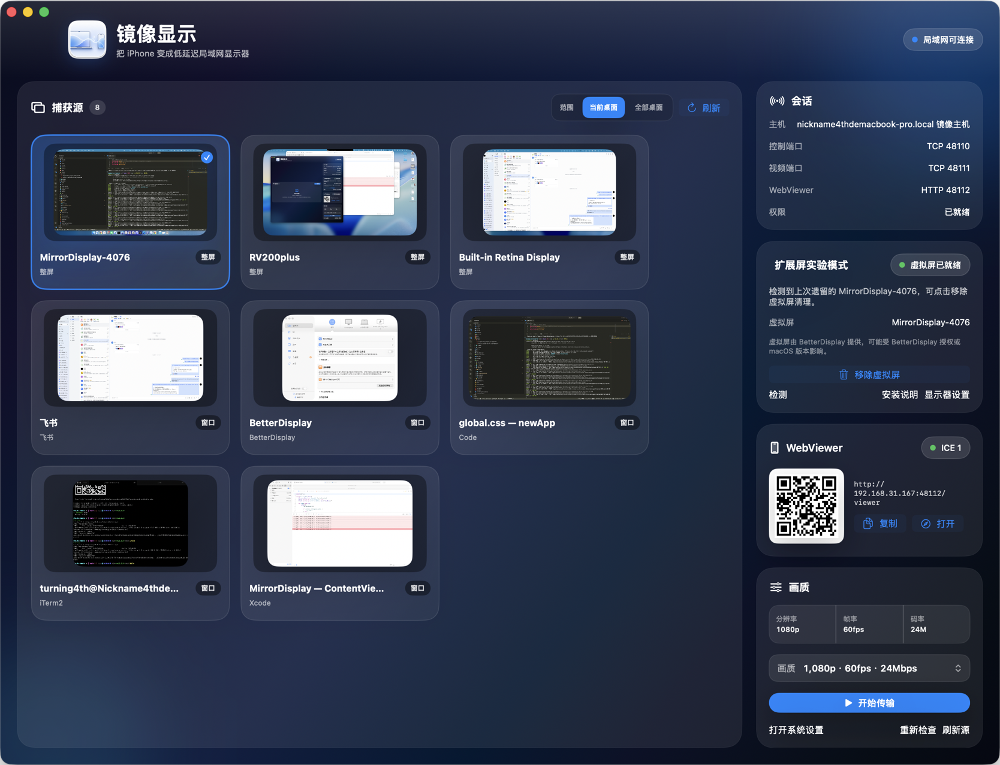

随身副屏
把聊天、日志、演示备注放到 iPhone。
macOS + iPhone · 局域网显示方案
Mac 端捕获屏幕或窗口，通过 WebRTC 推送到 iPhone。需要更干净的工作区时，一键切到专用虚拟屏。

Quick start
Why MirrorDisplay
把复杂链路收进一个 Mac Host：捕获、连接、画质和虚拟屏都在同一处完成。
把聊天、日志、演示备注放到 iPhone。
虚拟屏只展示你拖进去的内容。
Safari 打开 WebViewer，扫码即连。
ScreenCaptureKit 捕获，WebRTC 推流。
从稳定到高清，按网络一键切换。
为触控板、键盘和授权控制预留链路。
Architecture
一条很短的本地链路，所有状态都可见。
屏幕、窗口、虚拟屏统一管理。
按当前画质预设输出视频流。
扫码打开，连接状态实时显示。
通过 BetterDisplay 创建独立画面目标。
Guide
先跑通普通捕获，再按需要启用虚拟屏。
允许 macOS 屏幕录制。
选择屏幕、窗口或虚拟屏。
iPhone Safari 打开 WebViewer。
点击开始传输。
确认 Mac 与 iPhone 在同一网络，并优先使用 Mac Host 显示的 IP 地址。
重新授予屏幕录制权限后，退出并重新打开 Mac Host。
切到 1080p30 或 720p30，优先使用 5GHz / 6GHz Wi-Fi。
Experimental mode
不捕获主屏。创建一块专用显示器，再发送到 iPhone。
演示、直播、调试、会议共享。
由 BetterDisplay 提供虚拟显示能力。
只清理 MirrorDisplay 自己创建的屏幕。
BetterDisplay CLI 示例
/Applications/BetterDisplay.app/Contents/MacOS/BetterDisplay create \
-type=VirtualScreen \
-virtualScreenName=MirrorDisplay-AB12 \
-aspectWidth=16 \
-aspectHeight=9 \
-virtualScreenHiDPI=on \
-resolutionList=1920x1080,2560x1440